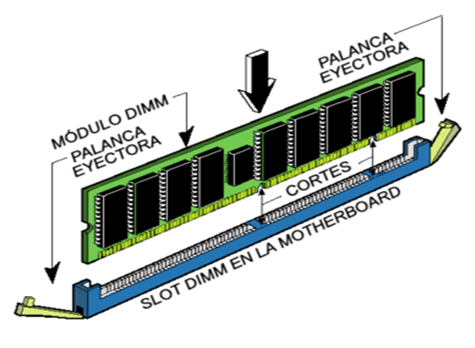

Con el cambio de siglo, ha habido un crecimiento constante en el uso de un nuevo tipo de memoria de semiconductor no volátil llamado memoria flash.
La memoria del semiconductor utiliza en su arquitectura circuitos integrados basados en semiconductores para almacenar información.
Un chip de memoria de semiconductor puede contener millones de minúsculos transistores o condensadores. Existen memorias de semiconductor de ambos tipos: volátiles y no volátiles. En las computadoras modernas, la memoria principal consiste casi exclusivamente en memoria de semiconductor volátil y dinámica, también conocida como memoria dinámica de acceso aleatorio o más comúnmente RAM (Random Access Memory).

Con el cambio de siglo, ha habido un crecimiento constante en el uso de un nuevo tipo de memoria de semiconductor no volátil llamado memoria flash.
Dicho crecimiento se ha dado, principalmente en el campo de las memorias fuera de línea en computadoras principalmente de escritorio. Las memorias de semiconductor no volátiles se están usando también como memorias secundarias en varios dispositivos de electrónica avanzada y computadoras especializadas y no especializadas.